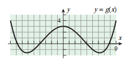
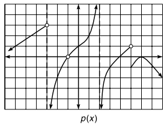

Лимеси - пресметка
Вежба 1. Нека е дадено:
Според Теоремата 2,
`■`
Според Теоремата 2,
`■`
Според Теоремата 2,
`■`
Според Теоремата 2,
`■`
Според Теоремата 2,
`■`
`lim_(x -> a) f(x) = 2; lim_(x -> a) g(x) = -4; lim_(x -> a) h(x) = 0`
да се најде лимесот
a. `lim_(x -> a) [f(x) + 2g(x)]`
Решение
`lim_(x -> a) [f(x) + 2g(x)] = lim_(x -> a) f(x) + 2lim_(x -> a) g(x) = 2 + 2*(-4) = -6`
Решение
`lim_(x -> a) [h(x) - 3g(x) +1] = lim_(x -> a) h(x) - 3lim_(x -> a) g(x) + 1 = 0 - 3*(-4) + 1 = 13`
Решение
`lim_(x -> a) [f(x) * g(x)] = lim_(x -> a) f(x) * lim_(x -> a) g(x) = 2 * (-4) = -8`
Решение
`lim_(x -> a) root(3) [6 + f(x)] = root(3) (lim_(x -> a) (6 + f(x)) = root(3) 8 = 2`
Решение
`lim_(x -> a) 2/g(x) = (lim_(x->2) 2)/( lim_(x->2) g(x)) = 2/(-4)= -1/2`
Вежба 1. Со помош на графикот за `f` и `g` најди го лимесот. Ако не постои објасни зошто.
а) `L = 2`
б) `L = 0`
в) не постои
г) `f(2) = 2`
д) `L = 0`
ѓ) `L = 2`
`■`
а) `L = 3`
б) `L = 3`
в) `L = 3`
г) `f(0) = 3`
д) `L = +oo`
ѓ) `L = +oo`
`■`
а) `L = +оо`
б) `L = -1`
в) `L = -1`
г) `L = 1`
д) `L = -1`
ѓ) `L = 0`
`■`
Решение

Решение

Решение
Вежба 2. Ако `lim_(x -> a) f(x) = 2, lim_(x -> a) g(x) = 4, lim_(x -> a) h(x) = 0` да се определат лимесите
кои постојат, а ако не постојат да се објасни зошто.
`= lim_(x-> a) h(x) - lim_(x -> a)3*lim_(x -> a) g(x) + lim_(x -> a) 1`
`= 0 - 3*4 + 1`
`= 12`
`■`
`= (lim_(x-> a) g(x))^2`
`= 4^2`
`= 16`
`■`
`= root(3)(lim_(x-> a) (6 + f(x))`
`= root(3) (lim_(x -> a) 6 + lim_(x -> a) f(x))`
`= root(3) (6 + 2)`
`= root(3) 8`
`= 2`
`■`
`= lim_(x -> a) 2/lim_(x -> a) g(x)`
`= 2 / 4`
`= 1 / 2`
`■`
`= (lim_(x -> a) 3 * lim_(x -> a) f(x) - lim_(x -> a) 8 * lim_(x -> a) g(x))/(lim_(x -> a) h(x))`
`= 3 * 2 - 8 * 4 / 0`
лимесот не постои бидејки `h(x) =0`
`■`
а) `lim_(x -> a)(h(x) - 3g(x) +1)`
Решение
Решение
Решение
Решение
Решение
Пресметување на лимес - кога функцијата се стреми кон определена вредност
Вежба 1. Да се определат лимесите:
`x + 1 !=0` па вредноста на лимесот `f(x) = (p(x))/(q(x)) = f(a)`
`f(a) = (3^2 - 2*3)/(3 +1) = 3/4`
или
`((lim_(x -> 3) x)^2 - lim_(x -> 3)2 * lim_(x -> 3) x )/ (lim_(x -> 3) x + lim_(x -> 3)1)`
`(3^2 - 2 * 3 ) / (3 + 1)`
`= 3/4`
`■`
`x - 4 !=0` па вредноста на лимесот `f(x) = (p(x))/(q(x)) = f(a)`
`f(a) = (0^2 - 16)/(0 - 4) = 4`
или
`((lim_(x -> 0) x)^2 - lim_(x -> 0)16)/ (lim_(x -> 0) x -lim_(x -> 0)4)`
`(0^2 - 16) / (0 - 4)`
`= 4`
`■`
а) `lim_(x -> 3) (x^2 - 2x)/(x + 1)`
Решение
Решение
Пресметување на лимес - кога вредноста на функцијата е неопределена
Да се определат лимесите:
`lim_(x -> 3) (x^2 - 2x - 3)/(x - 3)`Решение
Кога `x -> 3` се добива неопределениот облик `0/0`.
Треба да извршиме расчленување
`x^2 - 2x - 3 = (x - x_1)(x - x_2)`
`x_(1,2) = (2 +- sqrt(4 + 12))/2 => x_1 = 3, x_2 = -1`
`x^2 - 2x - 3 = (x - 3)(x + 1)`
`lim_(x -> 3) (x^2 - 2x - 3)/(x - 3) = lim_(x -> -1) ((x - 3)(x + 1))/(x - 3)`
`= lim_(x -> 3)(x + 1)`
`L = 4`
`■`
Решение
Кога `x -> -1^+` се добива неопределениот облик `0/0`.
Треба да извршиме расчленување
`x^2 - 3x - 4 = (x - x_1)(x - x_2)`
`x_(1,2) = (3 +- sqrt(9 + 16))/2 => x_1 = 4, x_2 = -1`
`x^2 - 3x - 4 = (x - 4)(x + 1)`
`lim_(x -> -1) (x^2 - 3x - 4)/(x + 1) = lim_(x -> -1) ((x - 4)(x + 1))/(x + 1)`
`= lim_(x -> -1)(x - 4)`
`L = -5`
`■`
Решение
Кога `x -> 2` се добива неопределениот облик `0/0`.
Треба да извршиме расчленување на броителот и именителот
`x^2 + 3x - 10 = (x - x_1)(x - x_2)`
`x_(1,2) = (-3 +- sqrt(9 + 40))/2 => x_1 = -5, x_2 = 2`
`x^2 + 3x - 10 = (x + 5)(x - 2)`
`x^2 - 8x + 12 = (x - x_1)(x - x_2)`
`x_(1,2) = (8 +- sqrt(64 - 48))/2 => x_1 = 6, x_2 = 2`
`x^2 - 8x + 12 = (x - 6)(x - 2)`
`lim_(x -> 2) ((x - 2)(x + 5))/((x - 2)(x - 6)) = lim_(x -> -1) (x + 5)/(x - 6)`
`L = -7/4`
`■`
Решение
Кога `x -> =-5` се добива неопределениот облик `0/0`.
Треба да извршиме расчленување на броителот и именителот
`x^2 + 5x = x(x + 5)`
`x^2 - 25 = (x - 5)(x + 5)`
`lim_(x -> -5) x(x + 5)/((x - 5)(x + 5)) = lim_(x -> -1) x/(x - 5)`
`L = 1/2`
`■`
Решение
Кога `x -> 1^+` вредноста на именителот е `x - 1 =0` па функцијата не е определена
Треба да извршиме расчленување
`lim_(x -> 1^+) ((x^2 -1)(x^2 + 1))/(x - 1)`
`lim_(x -> 1^+) ((x -1)(x + 1)(x^2 + 1))/(x - 1)`
`lim_(x -> 1^+) (x + 1)(x^2 + 1)`
`= 4`
`■`
Решение
Кога `x -> 1^+` вредноста на именителот е `x - 1 =0` па функцијата не е определена
Треба да извршиме расчленување
`lim_(x -> 1^+) ((x^2 -1)(x^2 + 1))/(x - 1)`
`lim_(x -> 1^+) ((x -1)(x + 1)(x^2 + 1))/(x - 1)`
`lim_(x -> 1^+) (x + 1)(x^2 + 1)`
`= 4`
`■`
Решение
Кога `x -> 1^+` вредноста на именителот е `x - 1 =0` па функцијата не е определена
Треба да извршиме расчленување
`lim_(x -> 1^+) ((x^2 -1)(x^2 + 1))/(x - 1)`
`lim_(x -> 1^+) ((x -1)(x + 1)(x^2 + 1))/(x - 1)`
`lim_(x -> 1^+) (x + 1)(x^2 + 1)`
`= 4`
`■`
Решение
Кога `x -> 1^+` вредноста на именителот е `x - 1 =0` па функцијата не е определена
Треба да извршиме расчленување
`lim_(x -> 1^+) ((x^2 -1)(x^2 + 1))/(x - 1)`
`lim_(x -> 1^+) ((x -1)(x + 1)(x^2 + 1))/(x - 1)`
`lim_(x -> 1^+) (x + 1)(x^2 + 1)`
`= 4`
`■`
Решение
Кога `x -> 1^+` вредноста на именителот е `x - 1 =0` па функцијата не е определена
Треба да извршиме расчленување
`lim_(x -> 1^+) ((x^2 -1)(x^2 + 1))/(x - 1)`
`lim_(x -> 1^+) ((x -1)(x + 1)(x^2 + 1))/(x - 1)`
`lim_(x -> 1^+) (x + 1)(x^2 + 1)`
`= 4`
`■`
Решение
Кога `x -> 1^+` вредноста на именителот е `x - 1 =0` па функцијата не е определена
Треба да извршиме расчленување
`lim_(x -> 1^+) ((x^2 -1)(x^2 + 1))/(x - 1)`
`lim_(x -> 1^+) ((x -1)(x + 1)(x^2 + 1))/(x - 1)`
`lim_(x -> 1^+) (x + 1)(x^2 + 1)`
`= 4`
`■`
Решение
Кога `t -> 1` добиваме неопределен облик `0/0`
`t^3 -t -2t + 2 = t(t^2 - 1) - 2 (t - 1) = t(t - 1)(t + 1) - 2(t - 1) = (t - 1)(t^2 + t - 2)`
`t^2 + t - 2 = (t - t_1)(t + t_1)`
`t_(1,2) = (-1 +- sqrt(1 + 8))/2 => t_1 = -2, t_2 = 1`
`t^2 + t - 2 = (t - 1)(t + 2)`
`t^3 - t -2t + 2 = (t - 1)(t - 1) (t + 2)`
`t^3 + t^2 -5t + 3 = t^3 + 2t^2 - t^2 - 3t - 2t +3 = t^2(t - 1) + 2t(t - 1) - 3(t - 1) = (t - 1)(t^2 + 2t -3)`
`t^2 + 2t - 3 = (t - t_1)(t - t_2)`
`t_(1.2) = (-2 +- sqrt(4 + 12))/2 => t_1 =-3, t_2 = 1`
`t^2 + 2t - 3 = (t - 1)(t + 3)`
`lim_(t -> 1) (t^3 + t^2 - 5t + 3)/(t^3 - 3t + 2) = lim_(t -> 1) ((t-1)(t-1)(t+3))/((t-1)(t-1)(t+2))`
`lim_(t -> 1) (t+3)/(t+2)`
`= 4/3`
`■`
Решение
Кога `x -> 2` добиваме неопределен облик `2/0`
`lim_(x ->2^-) x/(x^2 -4) = -oo`
`lim_(x ->2^+) x/(x^2 -4) = +oo`
Нема лимес
`■`
Вежба 4. Најди формула за `f^-1(x)` и одреди го доменот ако `f(x) = sqrt(x + 3)`
`y = sqrt(x + 3)`
`x + 3 = y^2`
` x = y^2 - 3`
`f^-1(y) = y^2 - 3`
`f^-1(x) = x^2 - 3`
`D_(f^-1) = R_f = RR`
`■`
Решение
Вежба 1. Да се определи најголемиот отворен интервал, центриран во `x = 0`, така што за секое `x` во
интервалот вредноста на `f(x) = 2x + 3` се разликува за најмногу `0.0012` единици од бројот `f(0) = 3`:
`3 - 0.0012 < 2x + 3 < 3 + 0.0012`
`-0.0012 < 2x < 0.0012`
`-0.0006 < x < 0.0006`
`abs(x) < 0.0006`
Отворениот интервал е `(-0.0006, 0.0006)`
`■`
Решение